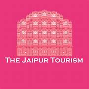

Jaipur, famously known as the Pink City, is the capital of Rajasthan and one of India’s most popular tourist destinations. The city is known for its royal heritage, magnificent forts, grand palaces, and vibrant culture.
This website is designed to provide an overview of Jaipur’s rich historical legacy and architectural marvels. Visitors can explore heritage sites, browse photographs, and even simulate hotel bookings through this platform.
Founded in 1727 by Maharaja Sawai Jai Singh II, Jaipur is one of the earliest planned cities in India. The city was painted pink to welcome the Prince of Wales in 1876, giving it the name “Pink City.”
Jaipur is a perfect blend of ancient traditions and modern development. From bustling markets to serene temples, the city offers a unique cultural experience to tourists from all over the world.
This website has been developed as part of a Web Technology project for our college. The objective of this project is to apply HTML and CSS concepts to create a multi-page website with consistent design and navigation.
The project demonstrates the use of structured layouts, image galleries, forms, hyperlinks, and reusable styles to simulate a real-world tourism website.